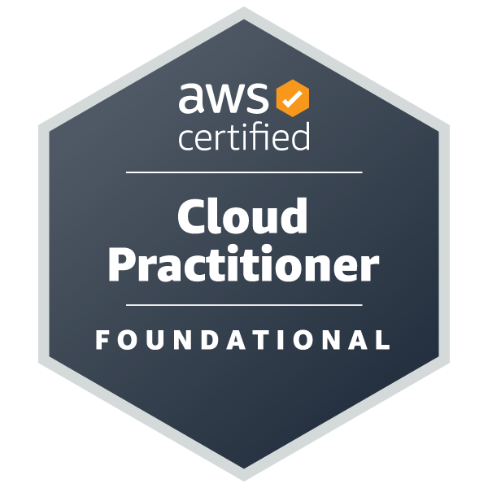
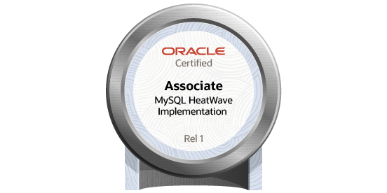
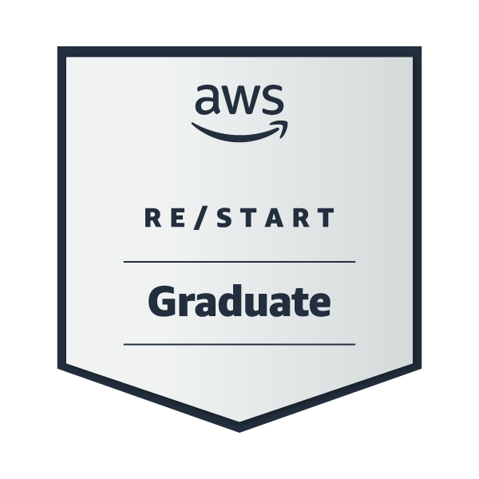
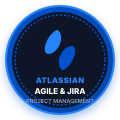
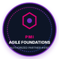
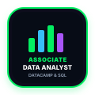
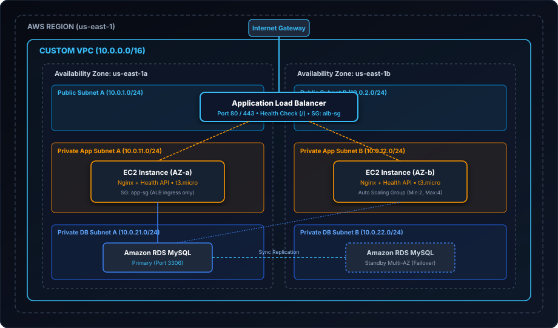

Cloud Support Associate &
Enterprise Support Engineer
Bridging the gap between AWS Cloud Infrastructure and Enterprise Application Support (Tier 2/3). 5+ years of multinational corporate experience (SAP Ariba, Bosch, Stefanini/Kraft Heinz, Rapidoc), driving down MTTR and delivering high-availability solutions.
"name": "Cassiano Moura",
"specialization": "Cloud Support & Enterprise Tier 2/3 Engineer",
"cloud_certification": "AWS Certified Cloud Practitioner (CLF-C02)",
"languages": "EN (C1 Fluent), ES (B2), PT (Native)",
"core_companies": ["SAP Ariba", "Bosch", "Kraft Heinz", "Rapidoc"],
"production_impact": "MTTR -20% | CSAT 92% | RCA & Zero-Trust",
"active_stack": [
AWS EC2/VPC/S3 Terraform Splunk APIs REST/SOAP SQL Entra ID
]
}
Two Specialized Pillars of Technical Excellence
Equally balanced expertise in Cloud Infrastructure Operations and Deep Enterprise Application Troubleshooting.
Cloud & DevOps (AWS)
Hands-on implementation of production-ready AWS environments aligned with the AWS Well-Architected Framework. Focused on high availability, network isolation, and Infrastructure as Code.
- AWS Core Architecture: EC2, VPC, S3, IAM, CloudWatch, Route 53, RDS, Lambda
- Infrastructure as Code (IaC) with Terraform for automated repeatable environments
- Linux (Ubuntu, Debian, RHEL) server administration and Docker containerization
- Observability, monitoring metrics, alarms, and auto-scaling resilience
Enterprise & Application Support
Extensive background resolving complex corporate incidents for Fortune 500 ecosystems and healthtech platforms. Direct escalation bridge to software engineering and infrastructure teams.
- Deep API Troubleshooting: REST & SOAP APIs, Postman, HTTP status codes, JSON/XML payloads
- Forensic Log Analysis: Splunk investigations, query parsing, error tracking, and RCA
- Advanced SQL Diagnostics: relational data inspection, queries, and performance audits
- Identity & Security: Microsoft Entra ID (Azure AD), SSO, MFA, Conditional Access & VPNs
Official Certifications & Industry Badges
Verified industry credentials confirming technical proficiency in cloud computing, security, database platforms, and agile delivery.

AWS Certified Cloud Practitioner
Comprehensive validation of AWS core cloud concepts, security, architecture, pricing models, and compliance.
Verify Credential ↗Microsoft Security & Identity (SC-900)
Foundational knowledge of Microsoft Entra ID, identity protection, cloud security posture, compliance, and zero-trust.
Verify Credential ↗
Oracle Data Platform Foundations
Proficiency in enterprise relational database architectures, autonomous data management, and cloud storage.
Verify Credential ↗
MySQL HeatWave Implementation
Architectural and implementation mastery of high-performance analytics and transactional MySQL clusters.
Verify Credential ↗
AWS re/Start & Formação AWS 5.0
270-hour intensive engineering training (AWS re/Start, AI & No-Code). Hands-on Linux, networking, security, troubleshooting, and AWS support.

Atlassian Agile Project Management
Hands-on Jira configuration, sprint workflows, backlog grooming, SLA adherence, and agile team escalation management.
View Certificate ↗Generative AI Productivity Skills
Application of generative AI models to business productivity, automated script generation, troubleshooting, and root-cause analysis.
View Certificate ↗
Agile Foundations (PMI Rep #4101)
Core agile values, Scrum/Kanban ceremonies, iterative delivery cycles, and cross-functional enterprise collaboration.
View Certificate ↗
Associate Data Analyst & SQL
Advanced relational query creation, schema diagnostics, data manipulation, and analytical problem-solving.
Verify Credential ↗Featured Cloud & Engineering Projects
Production-ready architectures built with Terraform, complete with automated failure recovery, monitoring, and tier-2/3 troubleshooting playbooks. Zero AWS cost to maintain.

Multi-Tier Highly Available & Resilient AWS Architecture with Terraform
A complete enterprise-grade cloud deployment across two Availability Zones featuring public/private subnets, an Application Load Balancer, an EC2 Auto Scaling Group running health check endpoints, and a Multi-AZ RDS MySQL database with strict security group isolation.
- Multi-AZ VPC with public, private app, and isolated database subnets
- Automated scaling with CloudWatch alarms and ALB target group health checks
- Least-privilege security group layering (Internet → ALB → EC2 → RDS only)
- Includes complete Cloud Support Troubleshooting Playbook (502/504 & RDS RCA)
Incident Response Pipeline (CloudOps)
Automated CloudWatch CPU/Disk alarms that dispatch notifications via Amazon SNS and invoke an AWS Lambda function (Python) for automated service remediation and incident reporting.
API Troubleshooting & Observability Platform
Microservice structured JSON logging environment with Postman test traffic suites and Splunk / Grafana dashboards monitoring real-time 4xx client errors and 5xx server failure rates.
Enterprise Corporate Track Record
5+ years resolving critical incidents and maintaining mission-critical platforms in multinational enterprise environments.
Spearheaded N2/N3 technical troubleshooting for enterprise procurement SaaS applications, investigating complex REST/SOAP integration errors, analyzing Splunk logs, resolving critical data discrepancies via SQL, and partnering directly with core software engineering teams.
Delivered high-tier technical support in a global corporate infrastructure, managing user identity, Microsoft Entra ID (Azure AD), access permissions, corporate VPN connectivity, and ensuring stringent SLA compliance under ITIL frameworks.
Managed incident resolution and service desk operations for a multinational food & beverage giant. Conducted root cause analysis on recurring incidents, resulting in a 15% drop in ticket recurrence and maintaining 92%+ CSAT.
Supported mission-critical healthcare telemedicine and SaaS software, monitoring API endpoint response times, managing PostgreSQL/MySQL database queries, diagnosing network latency, and executing end-to-end UAT.
Technical Skills & Competencies
Curated tooling, frameworks, and operational platforms mastered across corporate support and cloud engineering.
Amazon Web Services
EC2, VPC, S3, IAM, RDS, Route 53Terraform (IaC)
Declarative Modules, Plan & ApplyDocker
Containerization, Dockerfile, RunLinux Systems
Ubuntu, Debian, RHEL, Bash, SSHSplunk
Log Investigation, Queries, AlertsAWS CloudWatch
Metrics, Alarms, Logs InsightsRoot Cause Analysis
RCA Playbooks, 5 Whys, Incident ReviewPostman & SoapUI
REST & SOAP APIs, Payload ValidationSQL Diagnostics
MySQL, PostgreSQL, Schema AuditsHTTP Status Codes
Payload debugging (2xx, 4xx, 5xx)Microsoft Entra ID
Azure AD, SSO, MFA, Conditional AccessCorporate VPN & DNS
Tunnel Diagnostics, TCP/IP, DHCPZero-Trust & IAM
Least-Privilege Policies, RolesServiceNow
Incident, Problem & Change ManagementJira & Confluence
JSM, SLA Tracking, Runbooks & KBsPython & Automation
Scripting, Requests, Boto3 SDKReady to Discuss High-Impact Roles
Actively interviewing for Cloud Support Associate, Technical Support Engineer (Tier 2/3), Cloud Operations, and Application Support positions. Open to 100% remote worldwide contracts (USD/EUR), Latin America, Brazil, and hybrid in Porto Alegre.